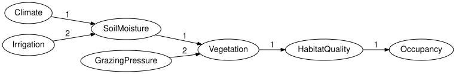

Bayesian networks as networks of mechanisms
Simon Frost
- Overview
- Setup
- Variables, states and mechanisms
- Validation
- The derived graph
- Why “not just a DAG”
- Binding tables
- Brute-force evaluation
- Summary
- References
Overview
A Bayesian network is usually introduced as a directed acyclic graph whose nodes carry conditional probability tables (Koller and Friedman 2009). BayesianNetworks.jl takes a slightly different view, the one that makes networks composable: a network is a collection of variables, each with an ordered list of states, and a collection of mechanisms, each of which generates one variable from an ordered list of input variables. The graph is derived from the mechanisms; it is not stored. Treating the mechanisms rather than the arrows as the data is what lets a network with some variables left ungenerated make sense, which is the categorical reading of a Bayesian network as a causal theory (Fong 2012).
This vignette builds a reference ecological network – climate and irrigation drive soil moisture, soil moisture and grazing pressure drive vegetation, and vegetation determines habitat quality and hence occupancy (the running example of the package specification) – then inspects it, validates it and draws it. The companion vignettes cover the wiring-diagram view and evaluation, observation versus intervention, open networks and composition, serialisation, dynamic networks and model cards.
Setup
The package re-exports what it needs from ACSets and FiniteKernels.jl, so this one using is enough.
using BayesianNetworksVariables, states and mechanisms
The bayesnet function takes name => states pairs and a list of target => parents mechanisms. Parent order matters: it fixes the axis order of the conditional probability table that will later be bound to the mechanism.
bn = bayesnet(:Climate => [:dry, :normal, :wet],
:Irrigation => [:low, :high],
:SoilMoisture => [:low, :medium, :high],
:GrazingPressure => [:low, :high],
:Vegetation => [:sparse, :moderate, :dense],
:HabitatQuality => [:poor, :good],
:Occupancy => [:absent, :present];
mechanisms = [:SoilMoisture => (:Climate, :Irrigation),
:Vegetation => (:SoilMoisture, :GrazingPressure),
:HabitatQuality => :Vegetation,
:Occupancy => :HabitatQuality])BayesianNetworks.BayesNet {Variable:7, State:17, Mechanism:7, Input:6, Label:0, Position:0, Ref:0}
| Variable | variable_name | space_ref |
|---|---|---|
| 1 | Climate | NoRef() |
| 2 | Irrigation | NoRef() |
| 3 | SoilMoisture | NoRef() |
| 4 | GrazingPressure | NoRef() |
| 5 | Vegetation | NoRef() |
| 6 | HabitatQuality | NoRef() |
| 7 | Occupancy | NoRef() |
| State | state_variable | state_name | state_position |
|---|---|---|---|
| 1 | 1 | dry | 1 |
| 2 | 1 | normal | 2 |
| 3 | 1 | wet | 3 |
| 4 | 2 | low | 1 |
| 5 | 2 | high | 2 |
| 6 | 3 | low | 1 |
| 7 | 3 | medium | 2 |
| 8 | 3 | high | 3 |
| 9 | 4 | low | 1 |
| 10 | 4 | high | 2 |
| 11 | 5 | sparse | 1 |
| 12 | 5 | moderate | 2 |
| 13 | 5 | dense | 3 |
| 14 | 6 | poor | 1 |
| 15 | 6 | good | 2 |
| 16 | 7 | absent | 1 |
| 17 | 7 | present | 2 |
| Mechanism | target | mechanism_name | kernel_ref |
|---|---|---|---|
| 1 | 3 | SoilMoisture_mechanism | NoRef() |
| 2 | 5 | Vegetation_mechanism | NoRef() |
| 3 | 6 | HabitatQuality_mechanism | NoRef() |
| 4 | 7 | Occupancy_mechanism | NoRef() |
| 5 | 1 | Climate_mechanism | NoRef() |
| 6 | 2 | Irrigation_mechanism | NoRef() |
| 7 | 4 | GrazingPressure_mechanism | NoRef() |
| Input | input_mechanism | input_variable | input_position |
|---|---|---|---|
| 1 | 1 | 1 | 1 |
| 2 | 1 | 2 | 2 |
| 3 | 2 | 3 | 1 |
| 4 | 2 | 4 | 2 |
| 5 | 3 | 5 | 1 |
| 6 | 4 | 6 | 1 |
The same network is available as reference_habitat_bn(). Every variable that is not named as a target gets a mechanism without inputs (a prior), so the network is closed: each variable has exactly one generating mechanism.
mechanism_names(bn)7-element Vector{Symbol}:
:SoilMoisture_mechanism
:Vegetation_mechanism
:HabitatQuality_mechanism
:Occupancy_mechanism
:Climate_mechanism
:Irrigation_mechanism
:GrazingPressure_mechanismThe network is an attributed C-set (ACSet) on the schema SchBayesNet (Patterson et al. 2022), with four objects. There is no Edge object: an arrow from Climate to SoilMoisture is an Input part saying that Climate is the first argument of the mechanism generating SoilMoisture.
(variables = nparts(bn, :Variable), states = nparts(bn, :State),
mechanisms = nparts(bn, :Mechanism), inputs = nparts(bn, :Input))(variables = 7, states = 17, mechanisms = 7, inputs = 6)Accessors return part ids; names are recovered with variable_name. States and inputs are always returned in their recorded order (state_position, input_position), never in part-id order.
states(bn, :SoilMoisture)3-element Vector{Symbol}:
:low
:medium
:highparents gives the inputs of the mechanism generating a variable, in the order that fixes the table’s axes:
variable_name.(Ref(bn), parents(bn, :Vegetation))2-element Vector{Symbol}:
:SoilMoisture
:GrazingPressurechildren reads the same Input parts the other way, listing every variable whose mechanism consumes the given one:
variable_name.(Ref(bn), children(bn, :SoilMoisture))1-element Vector{Symbol}:
:VegetationValidation
validate checks the structural rules of the specification: every reference points at an existing part, state and input positions are permutations, no mechanism reads its own target, the derived graph is acyclic, and (with closed = true) every variable has exactly one mechanism. It returns nothing when everything is fine and throws a typed exception otherwise; validation_errors collects all problems.
validate(bn; closed = true, unique_names = true)Let us break the network on a copy: add a second mechanism for Occupancy and an input that closes a cycle.
broken = deepcopy(bn)
add_mechanism!(broken, :Occupancy; inputs = [:Climate], name = :second)
add_input!(broken, :Climate_mechanism, :Occupancy)
validation_errors(broken; closed = true)2-element Vector{Exception}:
DuplicateGeneratorError(:Occupancy, 7, [4, 8])
CyclicBayesNetError([:Climate, :SoilMoisture, :Vegetation, :HabitatQuality, :Occupancy], [1, 3, 5, 6, 7])The mutating builders (add_variable!, add_state!, add_mechanism!, add_input!) never validate, so intermediate states can be inconsistent; everything else in the package treats networks as immutable values and returns new ones.
The derived graph
The DAG is a view: variable_graph builds a Graphs.jl SimpleDiGraph with one vertex per variable and one edge per input, and topological_order sorts the variables so that parents come first.
variable_name.(Ref(bn), topological_order(bn))7-element Vector{Symbol}:
:Climate
:Irrigation
:SoilMoisture
:GrazingPressure
:Vegetation
:HabitatQuality
:Occupancyto_graphviz draws the same graph. Nodes are labelled with the variable and its states; the result is a Graphviz.Graph, the package’s own DOT syntax tree, which renders to SVG through the Graphviz binaries.
to_graphviz(bn)
The layout direction and Graphviz attributes can be changed, and edges can be labelled with the input position, which shows the parent order of SoilMoisture and Vegetation:
to_graphviz(bn; rankdir = "LR", states = false, edge_labels = true)
Why “not just a DAG”
Three things distinguish this representation from a graph with tables attached.
Mechanisms are first-class parts. They have names and kernel references, so an intervention can replace one (the companion vignette on interventions), a composition can identify one across networks, and a refinement can substitute an open sub-network for one (the vignette on open networks). The graph never has to be edited; it follows the mechanisms.
Order is explicit. State order and parent order are attributes, so they survive colimits, which renumber parts, and they make the axis convention of the tables unambiguous: a table bound to
Vegetationhas axes(SoilMoisture, GrazingPressure, Vegetation)because that is the recorded input order.Syntax and semantics are separate. The ACSet holds no numbers. Kernels live in a
BayesModelwrapper, keyed by thekernel_refattribute of each mechanism, so the same structure can carry different tables, a different semantics altogether, or none at all.
Canonical forms make the representation comparable: canonicalize renumbers parts deterministically, so two networks built in different orders compare equal.
reversed = bayesnet(:Occupancy => [:absent, :present],
:HabitatQuality => [:poor, :good],
:Vegetation => [:sparse, :moderate, :dense],
:GrazingPressure => [:low, :high],
:SoilMoisture => [:low, :medium, :high],
:Irrigation => [:low, :high],
:Climate => [:dry, :normal, :wet];
mechanisms = [:Occupancy => :HabitatQuality,
:HabitatQuality => :Vegetation,
:Vegetation => (:SoilMoisture, :GrazingPressure),
:SoilMoisture => (:Climate, :Irrigation)])
reversed == bn, canonicalize(reversed) == canonicalize(bn)(false, true)Binding tables
A BayesModel wraps the structure with spaces and kernels from FiniteKernels.jl. bind_cpt takes a table in the parents-first, child-last layout and checks its shape and normalisation against the syntax.
m = BayesModel(bn)
m = bind_cpt(m, :Climate => [0.3, 0.5, 0.2])
m = bind_cpt(m, :HabitatQuality => [0.85 0.15; 0.4 0.6; 0.15 0.85]) # rows = Vegetation
missing_kernels(m)5-element Vector{Symbol}:
:SoilMoisture
:Vegetation
:Occupancy
:Irrigation
:GrazingPressurereference_habitat_model() binds all seven tables.
m = reference_habitat_model()
validate(m; closed = true, semantics = true)
kernel(m, :HabitatQuality)FiniteKernel{Float64}(Vegetation{sparse,moderate,dense} → HabitatQuality{poor,good})
sparse moderate dense
poor 0.85 0.4 0.15
good 0.15 0.6 0.85Brute-force evaluation
With every mechanism bound, the model has a joint distribution: the chain-rule product of the conditional probability tables (Koller and Friedman 2009). joint_distribution computes it by enumerating every assignment of the variables and multiplying the mechanisms’ entries, which makes it an oracle for small models rather than a scalable backend – BayesianNetworkInference.jl has the algorithms that scale. The result is a FiniteKernel state I → Climate ⊗ ... ⊗ Occupancy, so it carries its own axes.
J = joint_distribution(m)
J.codomFiniteSpace(Climate{dry,normal,wet} ⊗ Irrigation{low,high} ⊗ SoilMoisture{low,medium,high} ⊗ GrazingPressure{low,high} ⊗ Vegetation{sparse,moderate,dense} ⊗ HabitatQuality{poor,good} ⊗ Occupancy{absent,present})joint_table presents the same numbers as a table indexed by assignments:
jt = joint_table(m)
jt[:Climate => :dry, :Irrigation => :low, :SoilMoisture => :low,
:GrazingPressure => :low, :Vegetation => :sparse, :HabitatQuality => :poor,
:Occupancy => :absent]0.025704Marginals and conditionals are the usual queries, computed from that joint. Both take evidence (a model’s own evidence by default), and conditional returns a kernel rather than a number, so a single entry is read off with probability; extracting such a kernel from a joint state is disintegration (Cho and Jacobs 2019).
round.(marginal(m, :Occupancy).table; digits = 4)2-element Vector{Float64}:
0.5238
0.4762probability(conditional(m, :Occupancy, :Vegetation), :present, :dense)0.6675sample draws ancestrally in topological order, each variable from its mechanism’s kernel given the sampled parents. With enough draws the empirical frequencies approach the marginal, which is a cheap independent check on the enumeration:
using Random
draws = sample(m, 20_000; rng = MersenneTwister(2026))
emp = empirical_marginal(draws, :Occupancy, space(m, :Occupancy))
round.(emp.table; digits = 3), round.(marginal(m, :Occupancy).table; digits = 3)([0.524, 0.476], [0.524, 0.476])maximum(abs.(emp.table .- marginal(m, :Occupancy).table)) < 0.02trueSummary
A network here is variables, states and mechanisms stored as an ACSet; the DAG, parents, children and topological_order are all views derived from the Input parts, and validate checks the structural rules in one place. Syntax carries no numbers: a BayesModel binds a FiniteKernel per mechanism, so the same structure can carry different tables or none, and joint_distribution, marginal, conditional and sample read the semantics off the bound model by brute force. The next vignette, Observation versus intervention, separates conditioning from the do operator. The categorical view – the same structure as a string diagram, evaluated in FinStoch – is the first vignette of CategoricalBayesianNetworks.jl.
References
Cho, Kenta, and Bart Jacobs. 2019. “Disintegration and Bayesian Inversion via String Diagrams.” Mathematical Structures in Computer Science 29 (7): 938–71. https://doi.org/10.1017/S0960129518000488.
Fong, Brendan. 2012. Causal Theories: A Categorical Perspective on Bayesian Networks. https://arxiv.org/abs/1301.6201.
Koller, Daphne, and Nir Friedman. 2009. Probabilistic Graphical Models: Principles and Techniques. MIT Press.
Patterson, Evan, Owen Lynch, and James Fairbanks. 2022. “Categorical Data Structures for Technical Computing.” Compositionality 4 (5). https://doi.org/10.32408/compositionality-4-5.